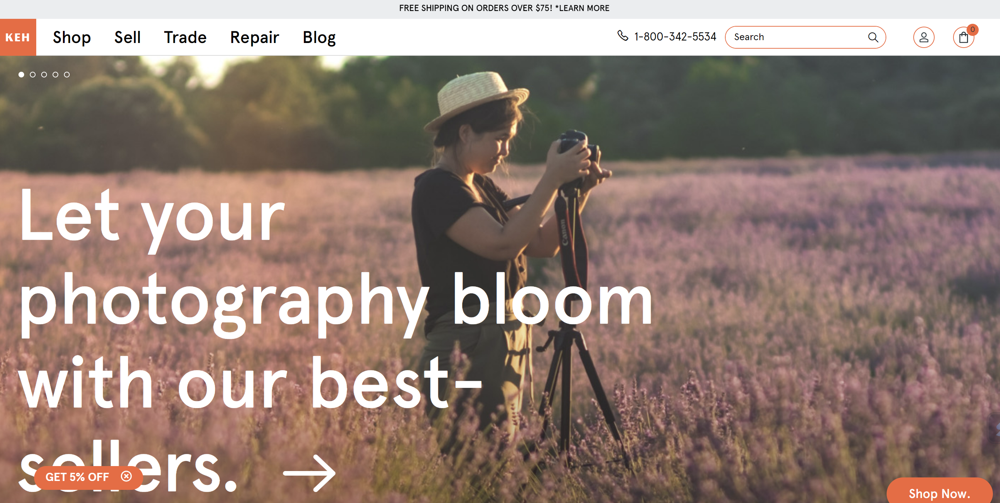
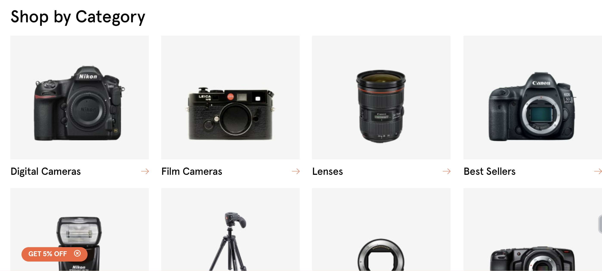
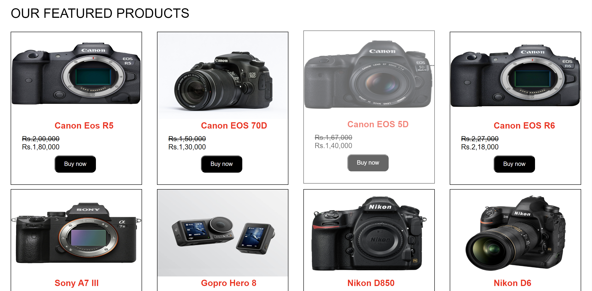
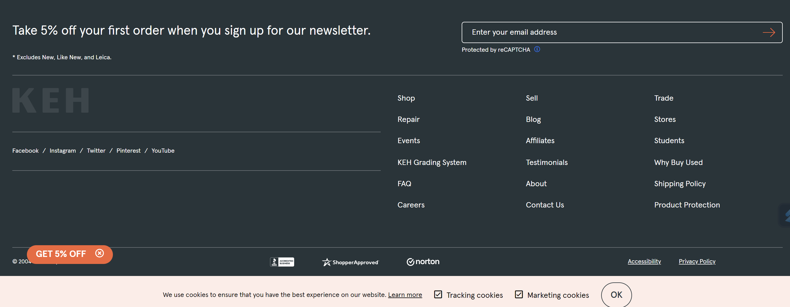
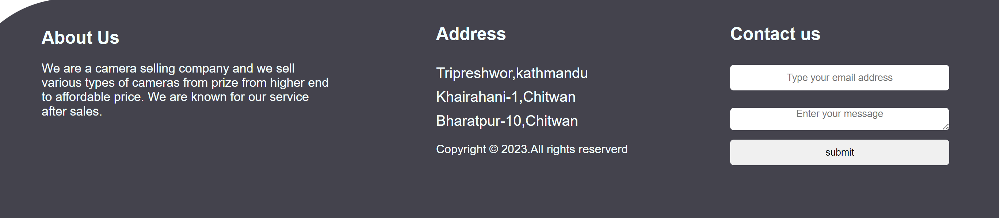
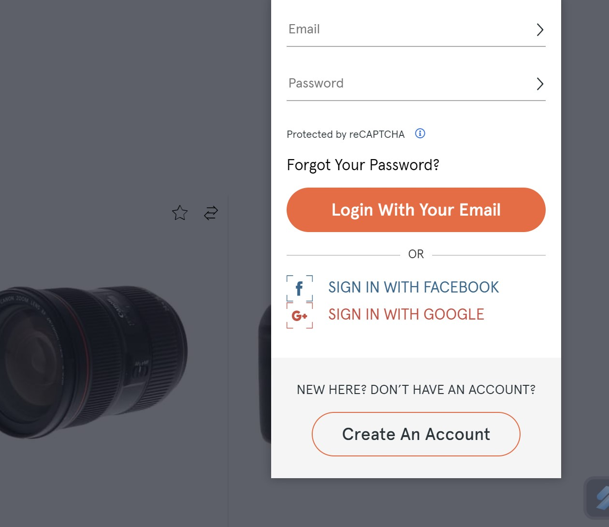
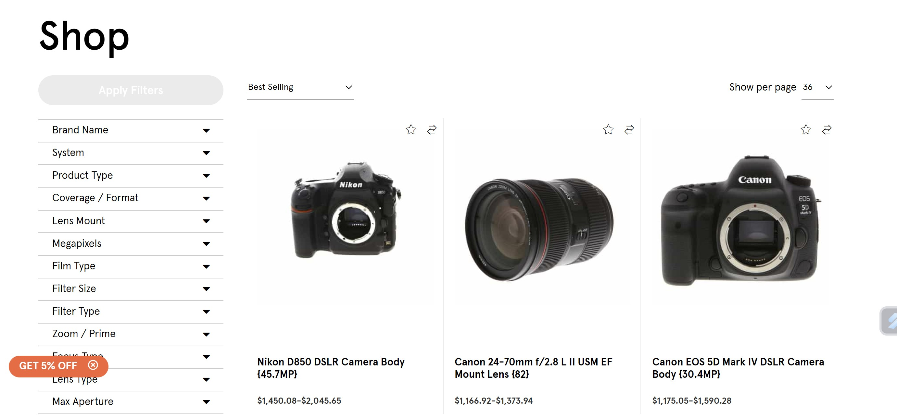
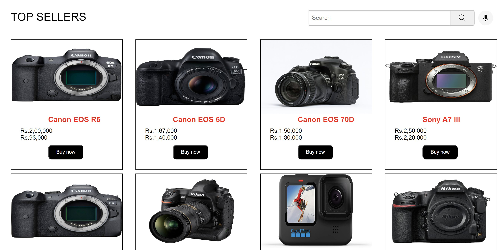
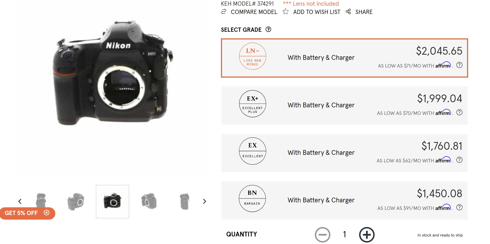
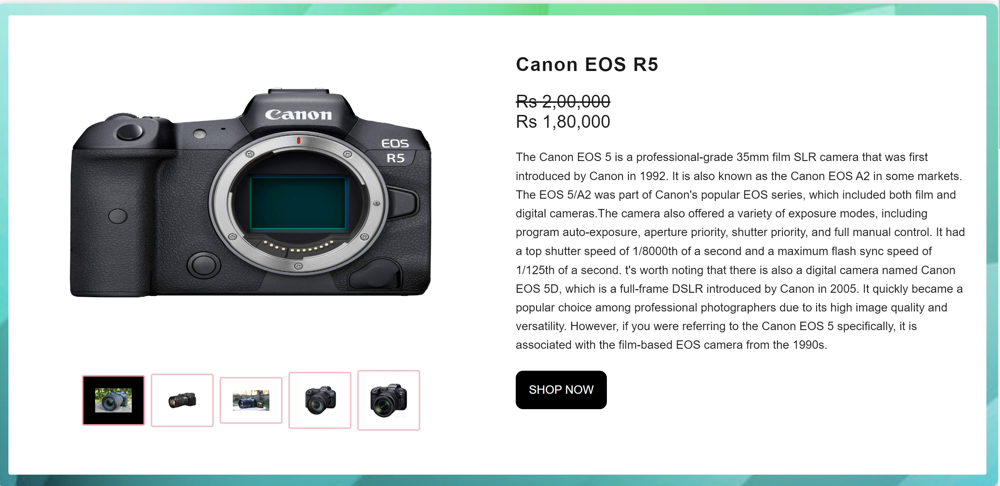

Welcome to the research page for our website, where we will detail the
various techniques and resources we utilized in the creation of this
site. This page will provide you with an in-depth look at the tools and
ideas that were instrumental in the development and design of our
website. Our process involved gathering inspiration from a variety of
sources, which we used to inform the overall direction of the project.
Additionally, we will outline the specific approaches and methods we
employed during the construction of this website. By perusing this page,
you will gain a comprehensive understanding of the process and
considerations that went into the creation of our website.
NAVIGATION BAR
Referenced Website

Our Website
A website's navigation bar serves as a crucial element in providing an
easy experience for their users. It allows visitors to
navigate and access different sections and pages of the website with feasibility.
While designing the navigation bar for our website, we found inspiration
in the www.keh.com website. Their
navigation bar caught our attention for its visually
appealing design and user-friendly layout. We used it as a reference in building our own
website for our solving our compatability issue.
One of the changes we made was removing the search button. We found that
the navigation bar was more simple without it, and that users were
able to find what they were looking for by browsing through the
navigation links that we put over there. We also created our own login and sign-up buttons
with unique colors and hover effects to make it stand out and be easily
which can be easily recognized by users. Additionally, we added our own logo to make our own brand
as well as to make more personalized wesbite name. Another modification we made was the change in backgournd
image
where we put different image as compared to reference website.
Our final product is a navigation bar that is simple, attractive and
user-friendly, and usually seems like the common product in the market.
According to the feedback of users, we found to know that this navigation bar
looks minimalistic and more simple to understand so that users can easily navigate to different
pages from the nav bar.
PRODUCT SUMMARY
Referenced Website

Our Website

A product summary on a home page is a concise and informative description of a specific product
or a selection of products. It serves as a brief overview that highlights the key features, benefits,
and value propositions of the product(s) being promoted. The purpose of a product summary is to capture
the attention of visitors and entice them to explore further or make a purchase.
We have taken this concept from the
www.keh.com
website where there is illustration of product category, but we slighly change to product items directly
instead of writing porduct categorities for solving the compatibily issue of the consumers.
FOOTER
Referenced Website

Our Website

The footer of a website is an important aspect of web design that helps
users easily access important information and navigate the site without
extensive browsing. It is an essential component of any website and
should be designed with that in mind. For our own website, we created a
simple yet effective footer design that provides visitors with the
necessary information and facilitates quick navigation.
During the design process, we looked at various other websites to gather
inspiration. We found the footer of the website " www.keh.com
wesbsite to be particularly well-designed and visually appealing. We were
impressed by its clean, minimalist design and its ability to present a
lot of information in a clear and organized manner. As a result, we
decided to use this websbite as a reference when creating our own footer.
We made a few modifications to the design to make it more suitable for
our website. For example, we added feedback form where users can constantly write message to us
which can lead us to update and modify website through their suggestions and complains, but
in the reference website there are no any feeback forms. At the same time , we have not added any options
included in the navbar here in the footer as we can go the the diiferent pages by clicking the links
in the navbar.
Blog page
Referenced WebsiteOur Website
A blog page is a type of website or web page that contains regular entries of information,
commentary, or personal thoughts written by an individual or a group of authors.
It is an online platform where writers, known as bloggers, share their expertise, experiences,
opinions, and insights on various topics.
WE have written the content about how technology is actullay affecting this modern world by
making the ease in survival for the human beings in the daily consecutive life. In the reference website, we
have
taken dault.com where the illustrations of medical things were applies in this page. Similarly, looking on
this content
we thought of adding the content of technology in this cutting age era.
LOGIN FORM
Referenced Website

Our Website
A login form on a website is a user interface element that allows users to enter their credentials
(such as username and password) to gain access to a restricted area or personalized content. It serves
as a gatekeeper, ensuring that only authorized users can access specific features or protected sections
of a website. Here's an overview of the elements commonly found in a login .
Here in this wesbite I have take referenve form the www.keh.com
website, where in this wesbite there appears login form in popup, but in our website we have login page
where there is
login form with a background image.
PRODUCT PAGE
Referenced Website

Our Website

A product page is a dedicated web page on an e-commerce website that provides detailed information about
a specific product or service. It serves as a crucial component of an online store, allowing businesses
to showcase their offerings, highlight key features, and provide the necessary details to help potential
customers make informed purchasing decisions. Here are some key elements typically found on a product
page.
We have taken the reference form www.keh.com
website . Our website is quite same as the reference website, only difference we have is the side bar, we
can see
sidebar in reference wesbite, but not in our product page.
PRODUCT DEATILS PAGE
Referenced Website

Our Website

A product details page, also known as a product detail page or PDP, is a web page on an e-commerce
website that provides comprehensive information about a specific product. It serves as a dedicated
space where potential customers can learn more about the product's features, specifications, and benefits.
The product details page plays a critical role in driving purchasing decisions and converting visitors into
customers. Here are some key elements typically found on a product details page.
We have take the reference from www.keh.com
website where product details page are almost same , only difference here is the functional properties of
image gallery ,in our webpage we hover to the each image of gallery and we get a output, but in the gallery
of
reference website we have to click each image, and it appears bigger.